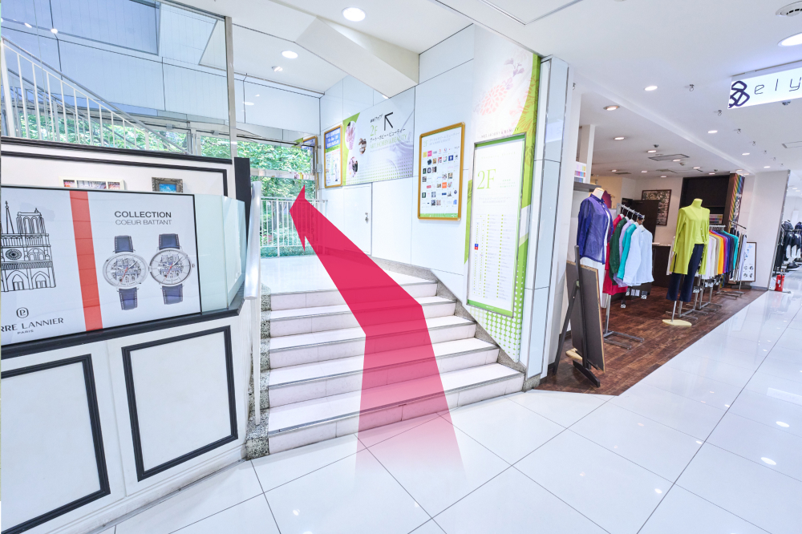
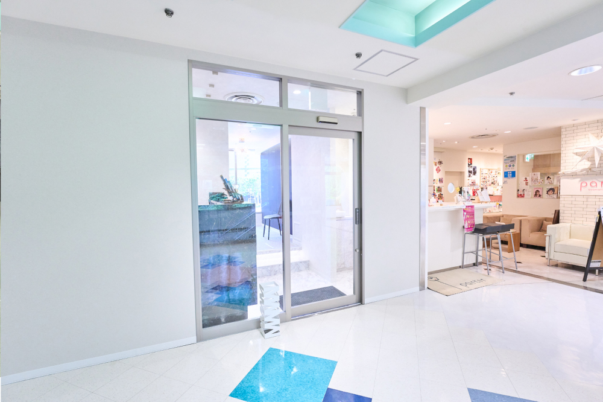

アクセス・診療時間
Access
当院へのアクセス
当院所在地
〒104-0061 東京都中央区銀座5-1 GINZA5 2F
- 東京メトロ銀座駅 C-1出口直結
- 東京メトロ日比谷駅 A1出口より徒歩2分
- JR有楽町駅 銀座口より徒歩4分
アクセス方法
新幹線(東京駅着)
- 東京駅で下車（東海道・東北・上越・北陸新幹線など）
- 東京メトロ丸ノ内線「東京駅」から「銀座駅」へ（約2分）
- 銀座駅「C1出口」から直結でGINZA5の2Fへ
羽田空港からのアクセス（約40〜50分）
- 京急線で「品川駅」へ（約15分）
- JR山手線で「有楽町駅」へ（約10分）
- 有楽町駅「銀座口」から徒歩約4分
または、東京モノレールで「浜松町駅」→JR山手線で「有楽町駅」→徒歩4分
成田空港からのアクセス（約70〜90分）
- 成田エクスプレスで「東京駅」へ（約60分）
- 東京メトロ丸ノ内線で「銀座駅」へ（約2分）
- 銀座駅「C1出口」から直結でGINZA5の2Fへ
または、リムジンバスで「銀座駅周辺」下車 → 徒歩数分
地図
銀座駅からのアクセス
01. 東京メトロ銀座駅 C-1出口

東京メトロ銀座駅C-1出口の後ろ側、TOKYU PLAZAの方面に向かいます。
JR有楽町駅 銀座口で降りた方は、まず東京メトロ銀座駅C-1出口を目指してください。
02. GINZAファイブ

横断歩道を渡ると目の前にGINZAファイブの建物が見えてきます。当院はこの建物内にあります
03. GINZAファイブエントランス

建物内に入ると柱が見えます。柱を超えて奥の左手にある階段に向かいます。
04. GINZAファイブ階段

階段を使い、2F（アート&ホビー&ビューティーフロア）に上がります。
05. 当院へ到着

階段を上がってすぐに、当院の入り口があります。
お気をつけてお越しください。
当院の診療時間
診療時間
保険外診療や長時間診療を予約制にて行っています。必ず事前に予約してご来院ください。
※予約状況などによって診療時間や診療日が異なる場合があります。
- 平日（月〜金）：10:00 〜 14:00、15:00 〜 20:00
- 土：10:00 〜 14:30
- 日祝：休診